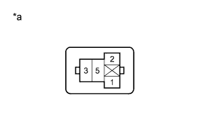

LIGHTING SYSTEM > Rear Fog Light Circuit |
| 1.PERFORM ACTIVE TEST USING INTELLIGENT TESTER (REAR FOG LIGHT RELAY) |
Using the intelligent tester, perform the Active Test (Click here).
| Tester Display | Test Part | Control Range | Diagnostic Note |
| Rear Fog Light Relay | Rear fog light relay | ON/OFF | The headlight dimmer switch is in the tail position. |
|
| ||||
| OK | ||
| ||
| 2.INSPECT REAR FOG LIGHT RELAY (FOG RR) |
 |
Remove the rear fog light relay from the engine room relay block.
Measure the resistance according to the value(s) in the table below.
| Tester Connection | Condition | Specified Condition |
| 3 - 5 | Battery voltage not applied between terminals 1 and 2 | 10 kΩ or higher |
| Battery voltage applied between terminals 1 and 2 | Below 1 Ω |
|
| ||||
| OK | |
| 3.CHECK HARNESS AND CONNECTOR (REAR FOG LIGHT RELAY [FOG RR] - BATTERY) |
|  |
Measure the voltage according to the value(s) in the table below.
| Tester Connection | Condition | Specified Condition |
| Rear fog light relay terminal 5 - Body ground | Always | 11 to 14 V |
| Rear fog light relay terminal 2 - Body ground | Headlight dimmer switch off | Below 1 V |
| Headlight dimmer switch tail | 11 to 14 V |
| *a | Front view of wire harness connector (to Rear Fog Light Relay) |
|
| ||||
| OK | |
| 4.CHECK HARNESS AND CONNECTOR (REAR FOG LIGHT RELAY [FOG RR] - MAIN BODY ECU) |
Remove the main body ECU (Click here).
Measure the resistance according to the value(s) in the table below.
| Tester Connection | Condition | Specified Condition |
| Rear fog light relay terminal 1 - A-27 (RFGO) | Always | Below 1 Ω |
| A-27 (RFGO) - Body ground | Always | 10 kΩ or higher |
|
| ||||
| OK | ||
| ||